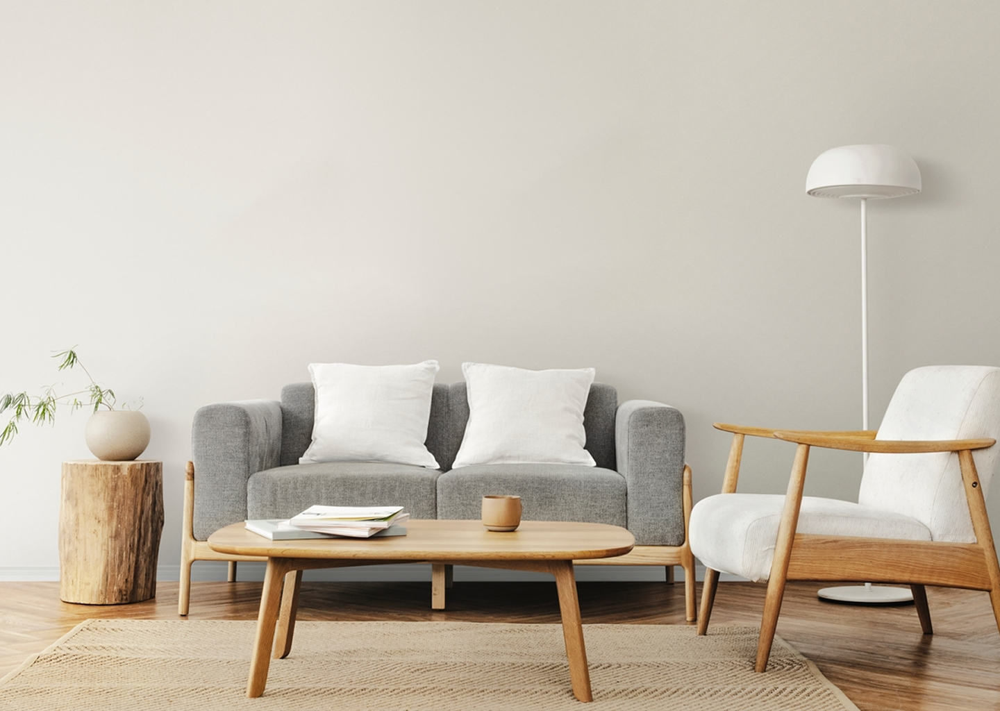
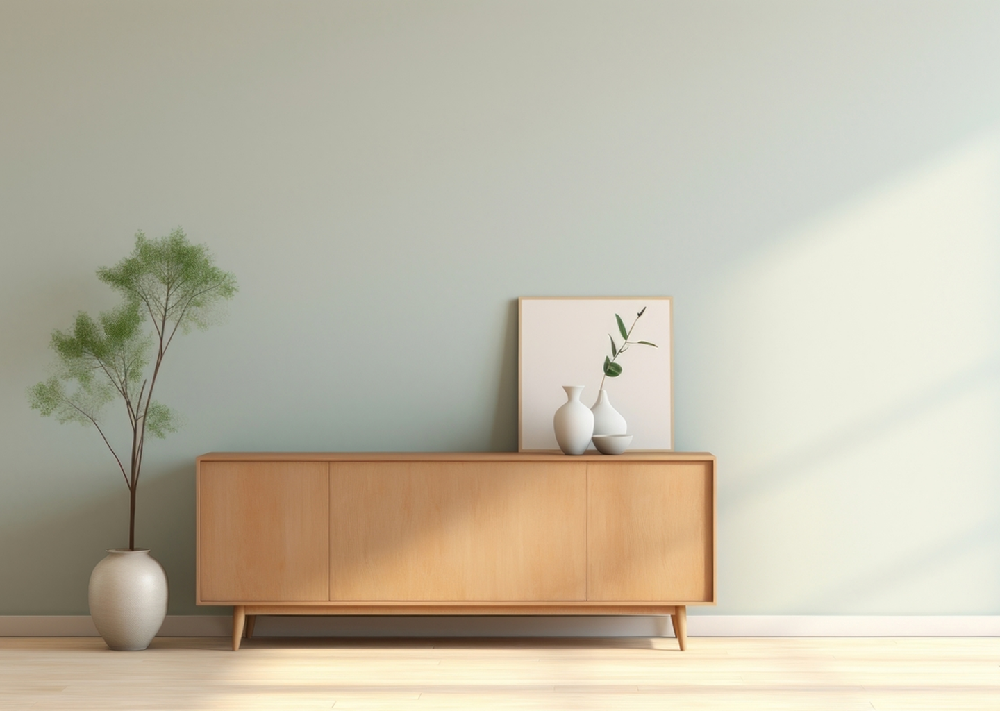
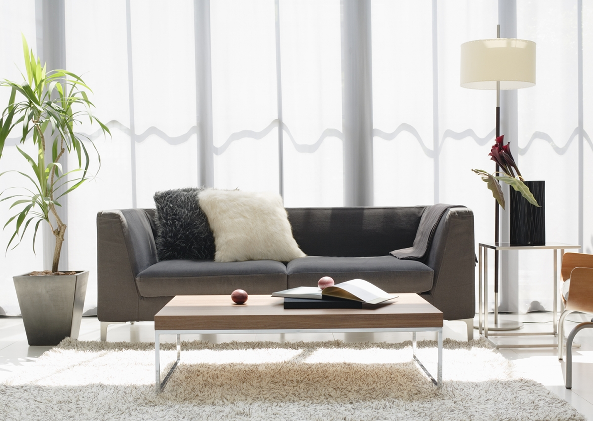
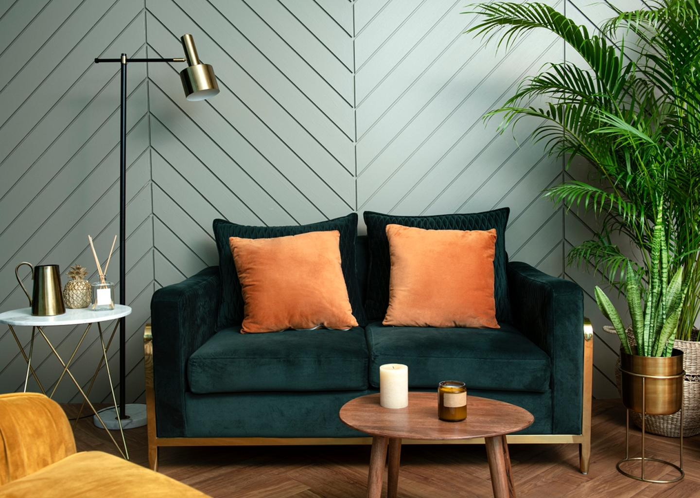

Jawab beberapa pertanyaan singkat dan lihat rekomendasi ruang tamu yang sesuai dengan kepribadianmu.
Cari Selera mu!Mulai Asesmen
Jawab beberapa pertanyaan
Tampilan Interior Muncul Sesuai Jawaban
Selamat Seleramu berhasil ditemukan!



